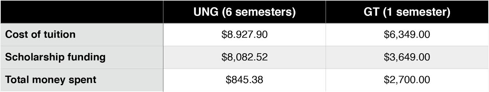
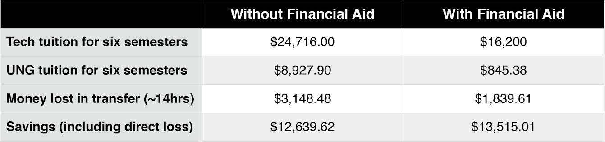

Having increased in leaps and bounds 33 percent nationwide since 2000, public college tuition in the US sports one of the largest price tags in the world. Inflated tuition and slashed funding for state scholarship programs have forced millennials to shoulder devastating student loan debt that many struggle to repay as part- and full-time jobs alike are handed over to older, more experience applicants. To a great number of young people, receiving a higher education may appear financially impractical — even impossible
But it doesn’t have to be.
Before attending the Georgia Institute of Technology, I studied at the University of North Georgia, a community college a short distance from home. Due to a certain degree of stereotypical thinking, community college tends to get a bad rap. Personally, I believe this to be undeserved: the classes are smaller, the dropout rate is lower, and, in the end, community college is substantially more affordable than a four-year college.
I’ve kept track of all of my personal expenses involved in putting myself through college to determine exactly how much money community college has saved me. (Note: the following numbers are effected by several widely-accessible merit-based and financial aid scholarships, including HOPE and the Pell Grant, and exclude both living expenses and book fees).

Without financial aid, it would have cost me $8,927.90 in tuition over six semesters at UNG, which, when compared to the $38,094 I would have spent for the same number of class hours at Tech, is still a rather remarkable figure. As it were, I ended up spending only $145 per semester out of pocket during my time at UNG compared to $2,700/semester at Tech, if we omit the cost of living. That’s $845 for 69 valuable credit hours over two years — in other words, less than $1,000 for half a college education. Of those credit hours, Tech accepted 55. Unfortunately, this is standard procedure when transferring between colleges. I’ll spend over $3,000 making up for lost ground — a small price to part with considering the amount I would have spent had I attended Tech my first two years:

I could have entered GA Tech on a four-year track my Freshman year of college; perhaps this would have earned me more clout in certain circles. But at what personal cost? Because of my choices, I saved $13,515 I would have otherwise spent on schooling and am well on my way to a degree from one of the highest-ranked public universities in the nation. Even without financial aid, that number would have been over $12,600. That’s a car, a downpayment on a house, a series of medical bills, an immense weight off the shoulders of a new graduate, with or without student debt.
It certainly doesn’t take a degree to understand the value of that.